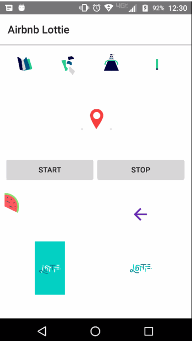

@nativescript-community/ui-lottie
nativescript-community/ui-lottie
NativeScript plugin to expose Airbnb Lottie for awesome animations.


Changelog
All notable changes to this project will be documented in the changelog.
Demo Screen
The .gif does not do the fluid animations justice

Installation
To install execute:
tns plugin add @nativescript-community/ui-lottie
Usage
NativeScript (Core)
XML
TS
import { LottieView } from "@nativescript-community/ui-lottie";
public yourLoadedEvent(args) {
this._myLottie = args.object as LottieView; /// this is the instance of the LottieAnimationView
}
NativeScript Angular
Module
First you need to include the NativeScriptLottieModule in your app.module.ts
import { NativeScriptLottieModule} from '@nativescript-community/ui-lottie/angular';
@NgModule({
imports: [
NativeScriptLottieModule
],
...
})
XML
Component
import { Component } from '@angular/core';
import { LottieView } from '@nativescript-community/ui-lottie';
@Component({
templateUrl: 'home.component.html',
moduleId: module.id
})
export class HomeComponent {
public loop: boolean = true;
public src: string;
public autoPlay: boolean = true;
public animations: Array<string>;
private _lottieView: LottieView;
constructor() {
this.animations = [
'Mobilo/A.json',
'Mobilo/D.json',
'Mobilo/N.json',
'Mobilo/S.json'
];
this.src = this.animations[0];
}
lottieViewLoaded(event) {
this._lottieView = <LottieView>event.object;
}
}
NativeScript Vue
Bootstrap
If you want to use this plugin with Vue, do this in your app.js or main.js:
import LottieView from '@nativescript-community/ui-lottie/vue';
Vue.use(LottieView);
This will install and register LottieView component to your Vue instance and now you can use the plugin.
Component
Assets
:fire: You can find animations in the sample-effects folder.
Android
Place your animation files in the NS app's app/App_Resources/Android/src/main/assets folder.
Note: In a nativescript-vue project the above folder may not exist. Place the files in platforms/android/app/src/main/assets.
iOS
Place your animations files in your app/App_Resources/iOS/ folder.
Properties (bindable)
| Property | Type | Default | Description |
|---|---|---|---|
autoPlay |
boolean |
false |
Start LottieView animation on load if true. |
loop |
boolean |
false |
Loop continuously animation if true. |
src |
string |
null |
Animation path to .json file. |
Properties
| Property | Type | Default | Description |
|---|---|---|---|
completionBlock |
(boolean) => void |
null |
Completion block to be executed upon completion of the animation. The animation is considered complete when it finishes playing and is no longer looping. |
duration |
number |
null |
Get the duration of the animation. |
progress |
number |
0 |
Get/set the progress of the animation. |
speed |
number |
1 |
Get/set the speed of the animation. |
Methods
| Method | Return | Parameters | Description |
|---|---|---|---|
cancelAnimation |
void |
None | Pauses the animation for the LottieView instance. |
isAnimating |
boolean |
None | Returns true if the LottieView is animating, else false. |
playAnimation |
void |
None | Plays the animation for the LottieView instance. |
playAnimationFromProgressToProgress |
void |
startProgress, endProgress | Plays the animation for the LottieView instance from the specified start and end progress values (between 0 and 1). |
setColor |
void |
value, keyPath | Sets the provided color value on each property that matches the specified keyPath in the LottieView instance. |
setOpacity |
void |
value, keyPath | Sets the provided opacity value (0 - 1) on each property that matches the specified keyPath in the LottieView instance. |
Contributors
 |
 |
 |
 |
|---|---|---|---|
| bradmartin | NathanWalker | rhanb | HamdiWanis |
 |
 |
|---|---|
| itstheceo | mudlabs |